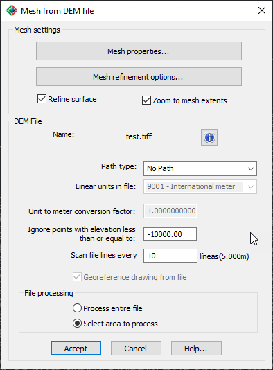
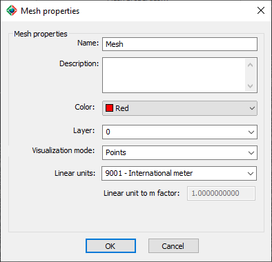
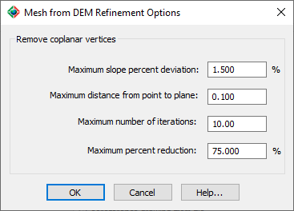
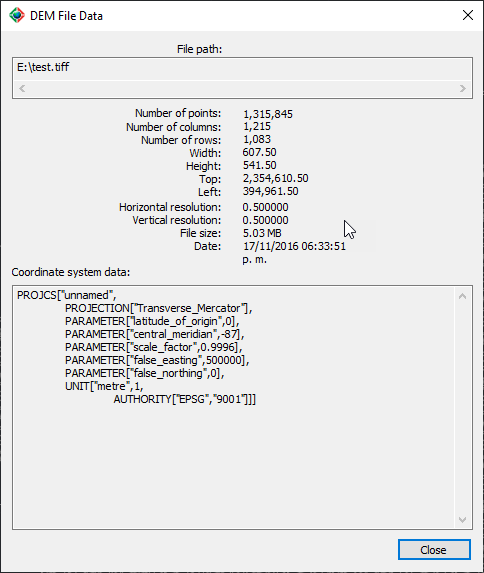
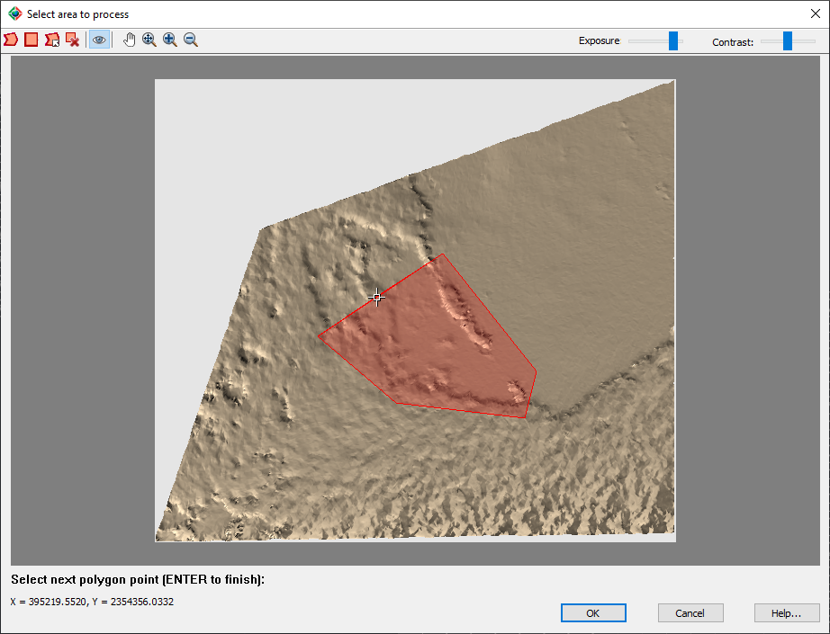

|
|
Toolbar:
Menu: CAD-Earth > Mesh > Mesh Explorer. Mesh Explorer node:
Context Menu: Add Terrain Mesh > From File > DEM file
|
|
|
Command line: CE_MESHEXPLORER
CAD-Earth version: Premium. |
(1).png)
.png)
.png)
(1).png)
Command description:
Import a terrain mesh from DEM files (TIFF, DEM, HGT, E00, MEM, CAT.DDF), specifying mesh properties and refinement options and other processing parameters, with the option to process the entire file or to select the area to process.
Dialog box settings:

ØMesh properties. The following dialog box will be shown:

•Name. Enter text to identify the mesh. Must not contain the following characters: | * : ; > < ? , = ` \
•Description. Enter additional information about the mesh (optional).
•Color. Select the color for the mesh lines and points.
•Layer. Select the layer where the mesh will be created.
•Visualization mode. The mesh can be displayed in any of the following visualization modes:
•TIN: Mesh triangles with continuous lines.
•Points: Mesh vertices will be shown as simple points with no size.
•Boundary & Points: Triangle sides that are not adjoined to another triangle will be shown. Internal vertices will be displayed as simple points with no size.
•Boundary Only: Only triangle sides that are not adjoined to another triangle will be shown, creating one or several outlines.
•Linear units. The distance unit selected will define the mesh scale factor. If the required unit is not included in the list, you can select 'Custom' at the end of the list to define a unit conversion factor.
•Linear unit to m factor. The units of measure used by CAD-Earth are meters, which are converted to the unit selected using this factor to display distance, area and volume calculations.
ØMesh refinement options. The following dialog box will be shown:

ØRemove coplanar vertices.
•Maximum slope deviation. If the vertex's average slope is equal to or higher than this value, the vertex will be removed.
•Maximum distance from point to plane. If the distance from a vertex to an average plane is higher than this value, the vertex will be removed.
•Maximum number of iterations. If the number of iterations is equal to this value, the mesh decimation will stop.
•Maximum percent reduction. If the percent reduction reaches this value, the mesh decimation will stop.
ØDEM file.
•Name. The current name of the file being processed. If you select the info button, the file properties will be displayed, showing the file path, DEM information such as the number of points, columns, rows, width, height, origin, horizontal and vertical resolution, file size, and date. If the file contains georeference data, it will be shown in the coordinate system panel.

ØPath type. The path to the DEM file can be as follows:
•Full path. The file must be located in the path selected.
•Relative path. The file must be located in a subfolder or in a parent folder relative to where the drawing file is saved.
•No path. The file must be located in the same path as the drawing or in any of the support file paths.
ØLinear units in file. If the linear units are defined in the file, the options to select linear units will be disabled.
ØUnit to m conversion factor. The value used for distance conversion from the units defined in the file to meters.
ØIgnore points with elevation less than or equal to. Some DEM files have non-defined elevation points equal to -10000 or a specific value. If points with elevation less than or equal to this value, they will not be processed.
ØScan file every n lines. This value will determine the height of each DEM row. For example, if you set this value to 10 and the mesh horizontal resolution is 0.5, the DEM row separation will be 5.
ØGeoreference drawing from file. If the DEM file has georeference information, it will be used to georeference the current drawing.
ØFile processing.
•Process entire file. All the rows and columns in the file will be processed.
•Select area to process. The following DEM viewer will be shown, where you can select a polygonal or rectangular region to process, or you can select an existing closed polyline in the drawing to define the area:

|
Button |
Description |
|
Select polygonal region. Specify points on screen to define the area to process. |
|
|
Select rectangular region. Specify two corners on screen to define the rectangular area to process. |
|
|
Select closed polyline in drawing. Pick an existing closed polyline to define the area to process. |
|
|
Clear selection. Delete the area defined. |
|
|
Show/Hide DEM mesh. If you hide the mesh, you can see the current area defined more clearly. |
|
|
Pan view. If you keep the left mouse button pressed and move the mouse pointer, the view will slide in the second point direction. |
|
|
Show mesh extents. Back to the original view. |
|
|
Increase zoom. The view will be incremented about 5% every time you pick this button. |
|
|
Decrease zoom. The view will be decremented about 5% every time you pick this button. |
|
|
Exposure and contrast. Increase or decrease the amount of light and color saturation. |
Tips:
•The DEM file preview is not displayed at full resolution. A maximum of a hundred thousand points will be sampled from the DEM file to display the information quickly.
•Some DEM files are several gigabytes in size. Select only the DEM file area you are going to process and scan the file every 5 or 10 lines to reduce the final mesh size. You can also set mesh refinement parameters to reduce the number of mesh vertices.
•The area to process can be defined in a clockwise or counter-clockwise direction.
•If you select a closed polyline to define the area to process, it must be placed in the drawing's correct coordinates before using this command.
•You can use the mouse wheel to increase or decrease the view when selecting an area to process. The view will be resized according to where the current cursor is located.
Copyright © 2023 Arqcom Software
Google Earth© is a registered trademark of Google inc. All other trademarks are the property of their respective owners.